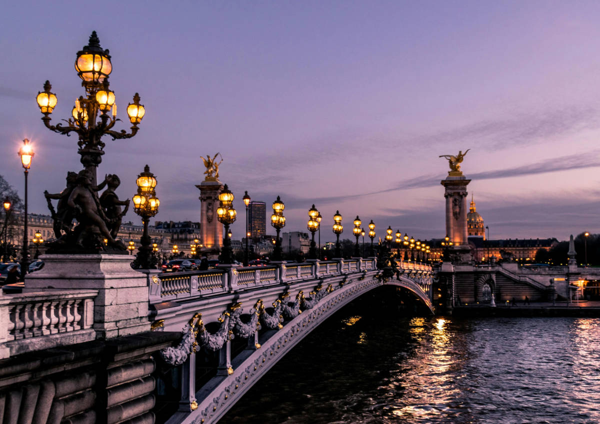

Beneath the rooftops of Paris, chimneys lean like watchful companions. Morning light pours over cafés where croissants flake onto tiny porcelain plates, and the Seine whispers past, carrying secrets and reflections of a city always half-dream, half-memory.
15
Lifestyle
Parisian Reminescence
On a cobblestone lane, footsteps echo beside the music of a lone accordion. Shop windows glow warmly, and a street artist sketches the unmistakable curve of the tower that anchors the skyline, silent guardian of Parisian nights.
1
Beauty
Make-up Look
The scent of strong coffee mingles with freshly baked baguettes as the city stirs awake. Pink skies stretch over wrought-iron balconies, each façade retelling a century, each passerby carrying forward the rhythm of Paris in their own quiet way.
7
Travel
Cutout Booties
Paris by night shimmers with earthly constellations. Terraces buzz with laughter, glasses chime in celebration, and street musicians improvise under lamplight. Each fleeting moment etches itself into memory, as if the city insists on being unforgettable.
2
Travel
Charleston in January
The Seine glitters like a ribbon of stars, bridges arching gracefully above. Lovers lean close, whispering promises into the cool night air. Chestnuts roast on corners, their smoky sweetness drifting through the boulevards like autumn's perfume.
6
Fashion
The Edition
Within covered arcades, voices hum softly against the clink of porcelain cups. The sweet aroma of pastries guides wanderers past boutiques, each window a stage of elegance, fashion, and quiet stories waiting to be discovered.
6

Lifestyle
Roman Holidays
Children race sailboats across the pond at the Luxembourg Gardens. Statues rise stoic against the trees, while benches cradle whispered confidences. The crunch of gravel underfoot echoes like a chorus of small, timeless Parisian moments.
5
Beauty
Power of Seduction
In the shadow of Notre Dame, time slows. Gargoyles gaze silently as bells call out across the river. Along the quays, booksellers open their green boxes, offering yellowed pages and forgotten treasures to anyone willing to linger.
4
Fashion
Il Sogno Italiano
Dusk falls over Montmartre, where painters fill canvases with color as bells ring in the distance. Lanterns light the square, voices rise in laughter, and Paris breathes like an open poem, eternally written by dreamers and poets.